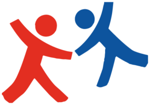

Drei Entwürfe mit den echten Inhalten der heutigen Website. Jeder Entwurf hat eine Startseite und Unterseiten für Kinderhaus, Schule, Verein, Termine und Kontakt. Einfach anklicken und durchklicken.
Hinweis: Das sind Entwürfe zur Ansicht. Fotos werden von montessori-erding.de geladen, Termine und Texte bitte vor einer Veröffentlichung prüfen. Jeder Entwurf liegt auch als WordPress-Theme im Repository.